NJ Governor STEM Scholars
Filament Splicer

 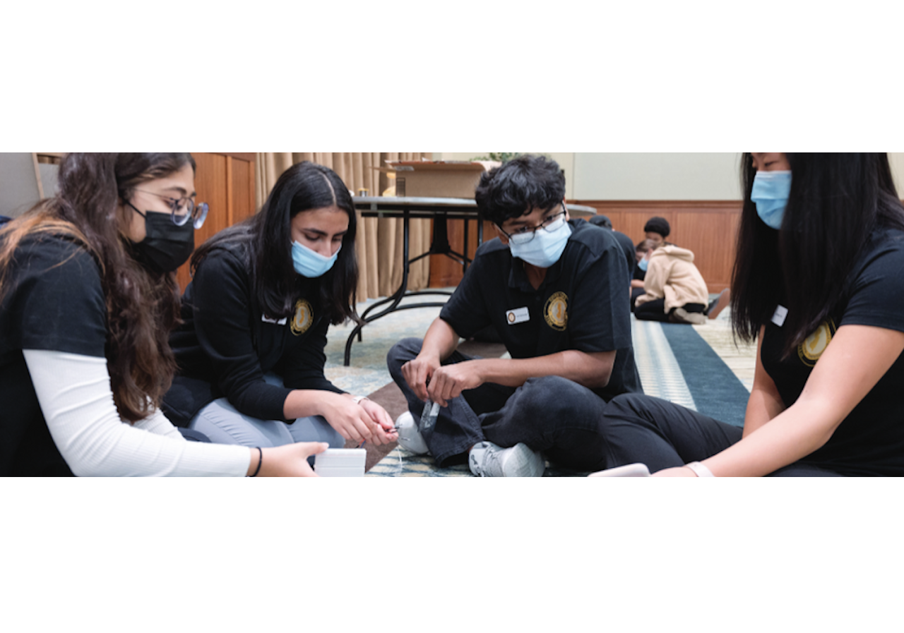
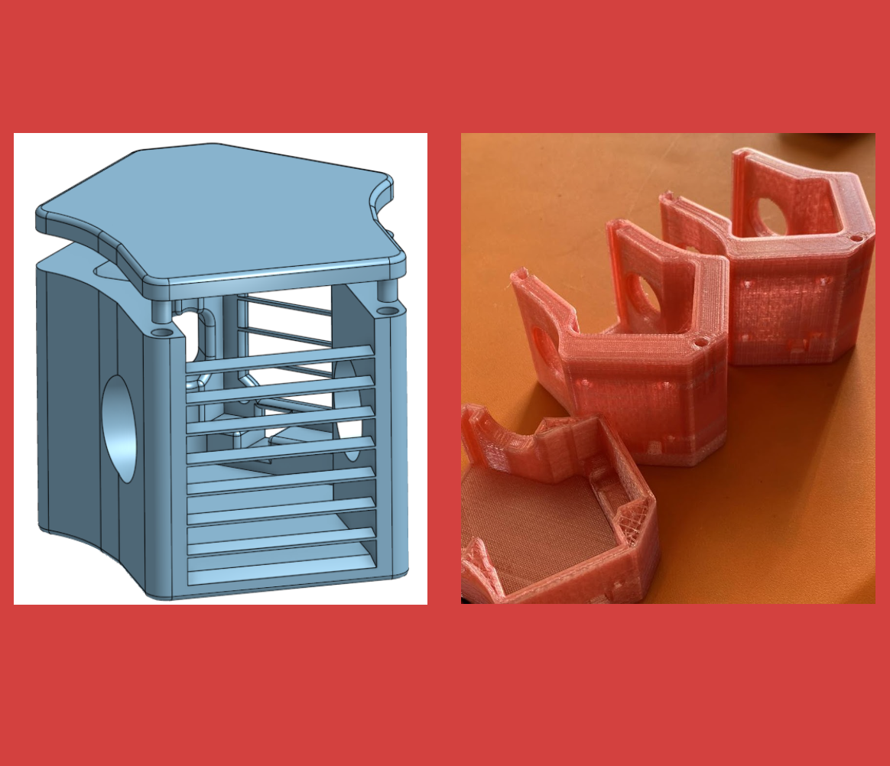
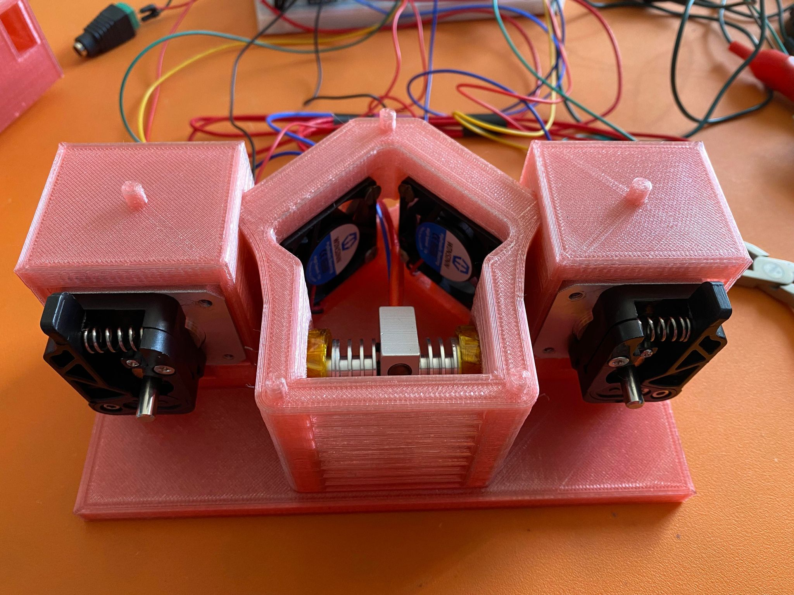
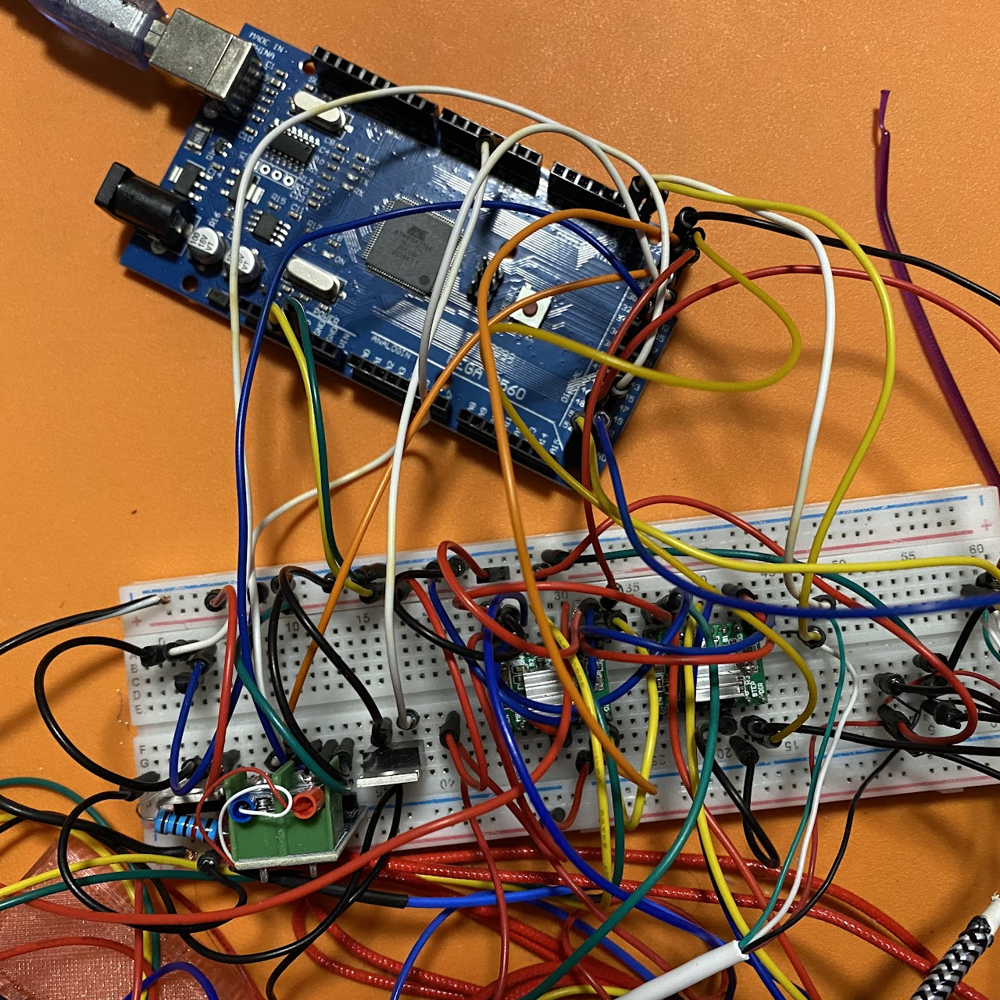
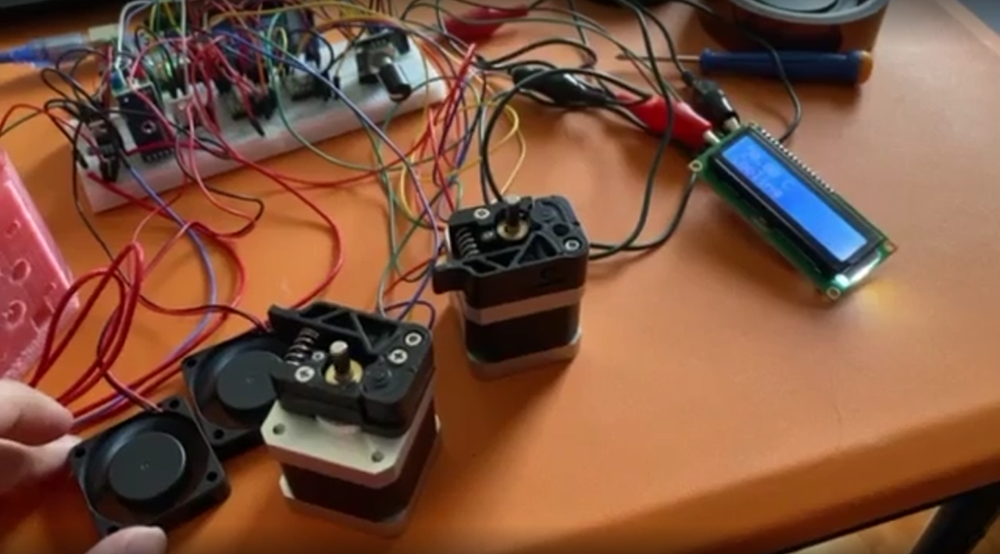
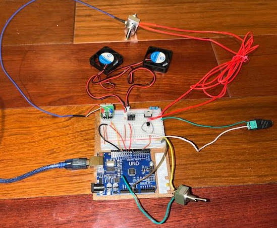
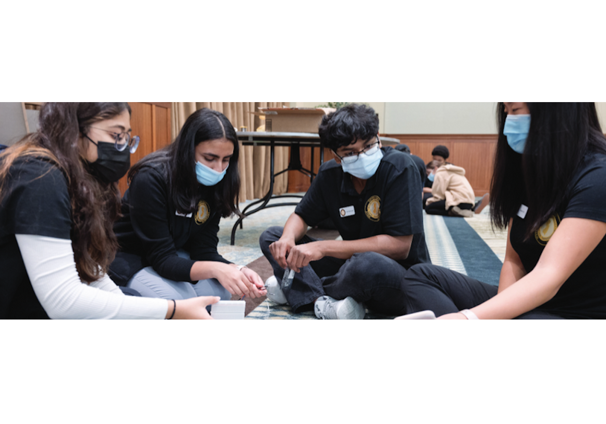
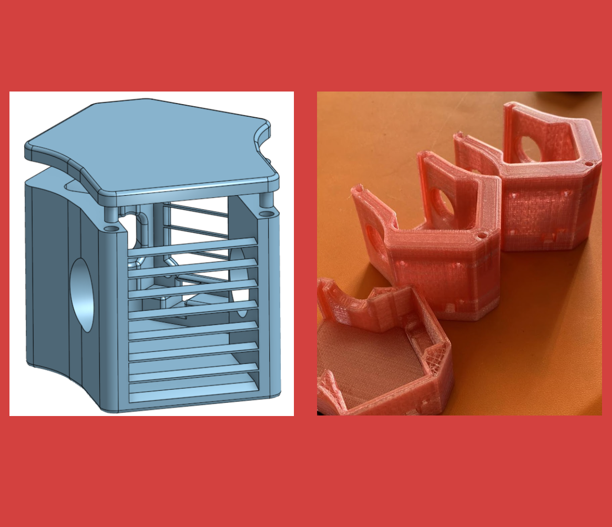
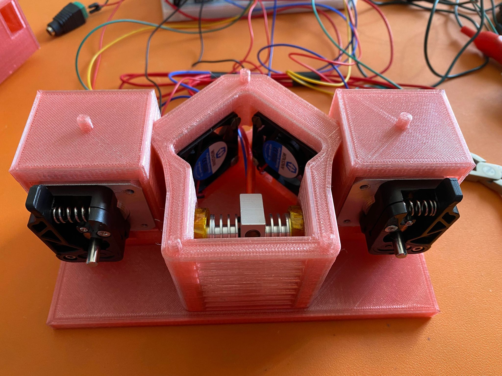
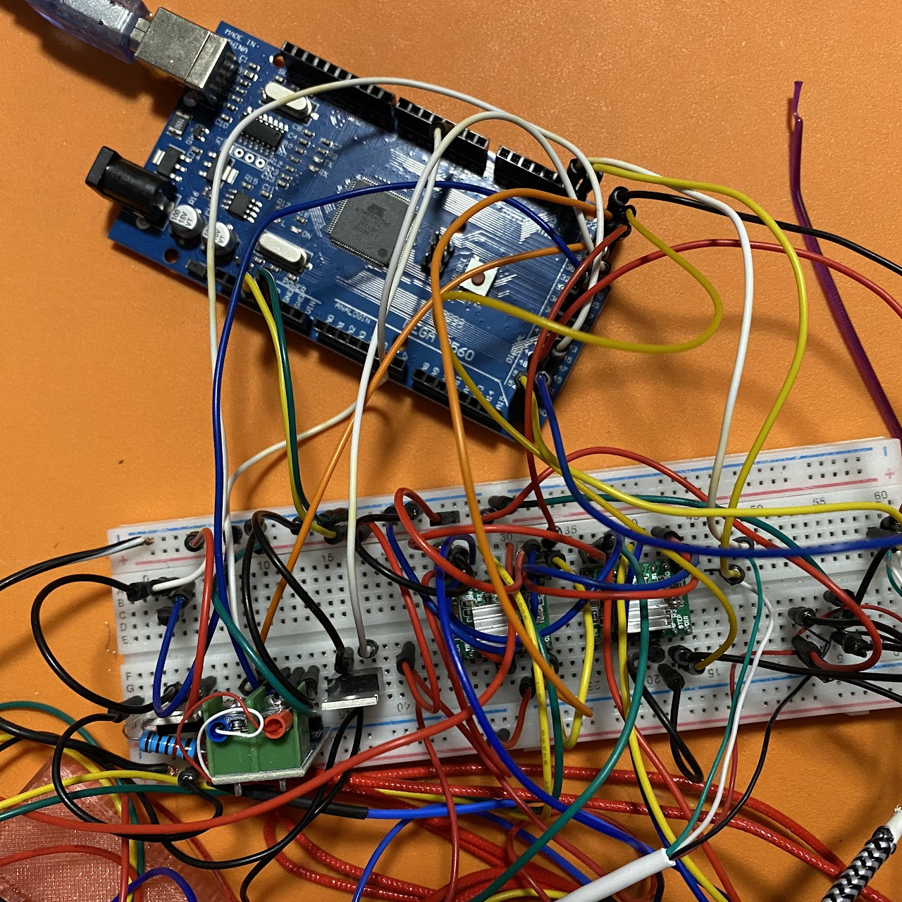
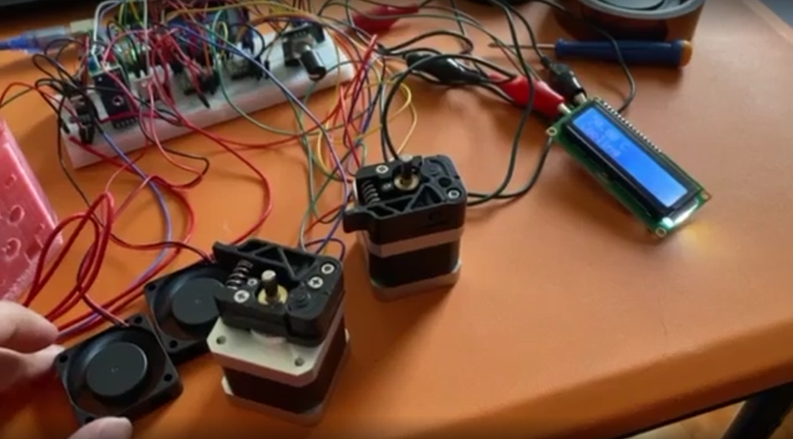
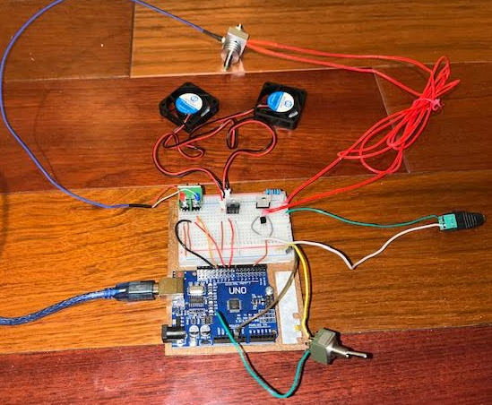
> During the academic year of 21-22, I participated as a New Jersey Governor STEM Scholar. This program would select an array of University students to lead/mentor groups of highschool level students from all parts of New Jersey. 10 teams would form with 2 University students per team to design a research project. 10 highschool students would be assigned to each team to learn various areas of STEM to complete the research laid out by their mentors.
> Early into my college career, I began 3D-printing, of which I noticed an excess amount of filament being wasted between rolls. To reduce possible waste in scrap filament, I designed the filament splicer, a device to join old and new filaments.
> The final splicer was able to join two pieces of filament together, however, it was found to succeed the best with PLA filament. PETG had a much lower glass-transition period, so it starts flowing at much lower temperatures while remaining cool enough not to melt, this caused deformations during splicing. ABS was also tested but due to the high temperatures for ABS, it did not bond well. After splicing the filament would become less flexible and more brittle.
> Looking back retrospectively, there is no longer a real need for such a device. Most 3D-printers have advanced to the point where they have runout sensors, some can use the full length of the remaining printer, and advanced attachments such as the Bambulabs AMS now exist for precise multicolored 3D-Printing (one of the possible applications of our splicer).
> Between myself and my co-captain, Xavier, we could have completed the project well within the time constraints of the program. However, the main point of the program is for us to pass down our knowledge and skills to the highschoolers. At the beginning of the project, most of the students had never touched an Arduino, let alone program one, so we took these eager individuals and instilled in them the ability to code, CAD, prototype, develop, solder, redesign, troubleshoot, and teamwork, all essential in STEM. I am proud to have worked with this group.
> For more information on the project and the team, please visit the link above!